| 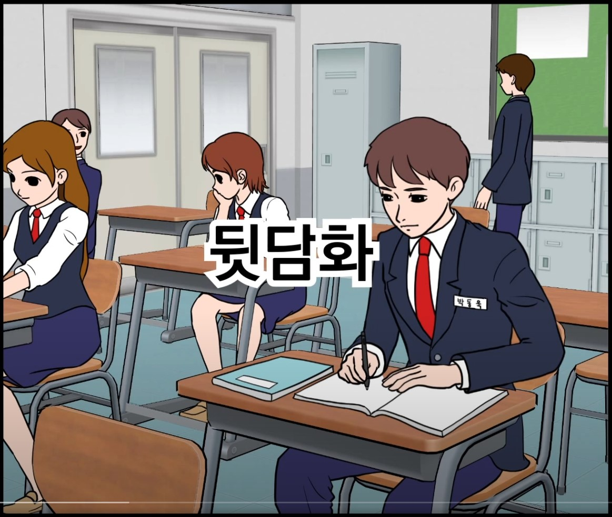 | 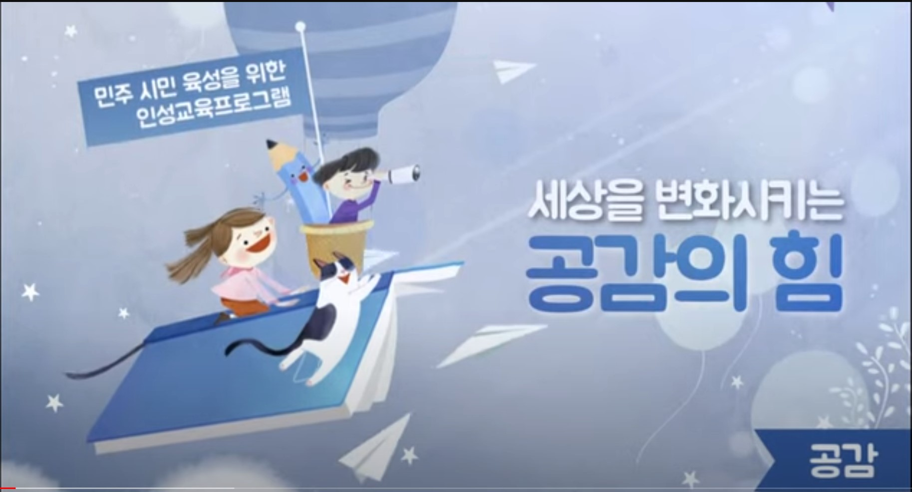 | 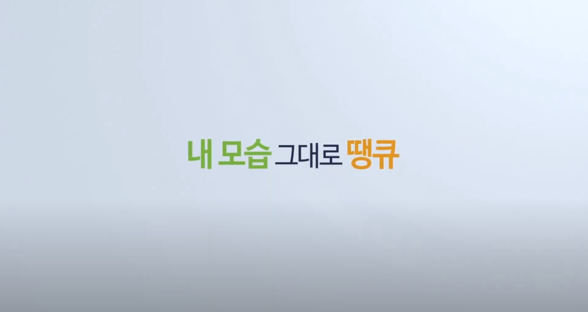 | 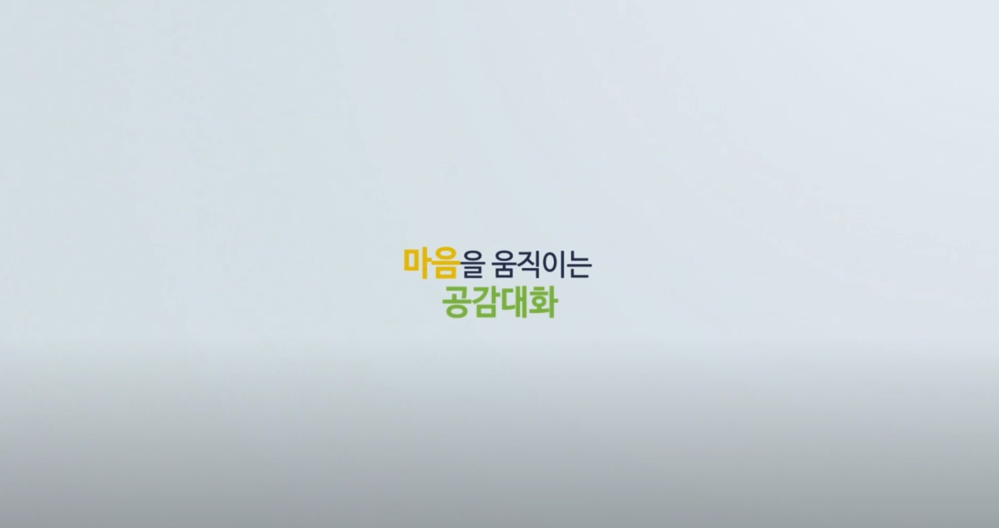 | 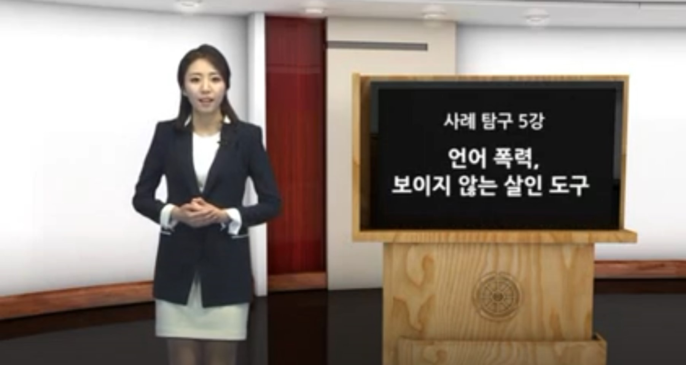 | 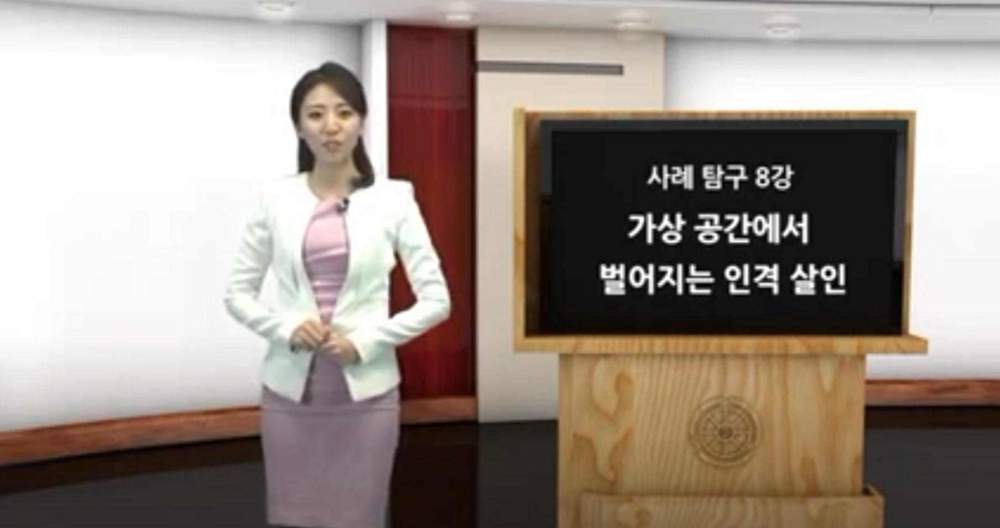 | 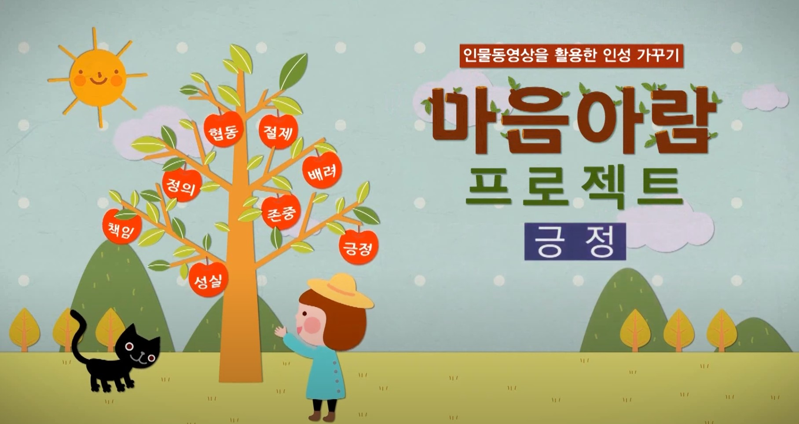 | 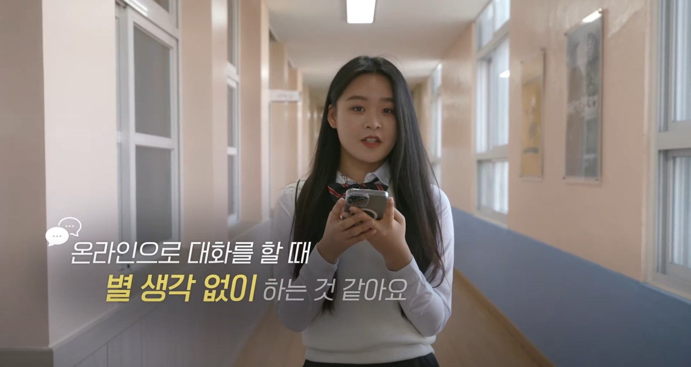 | 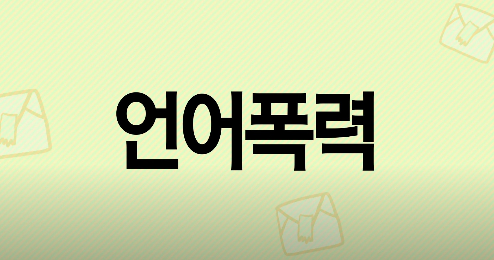 | 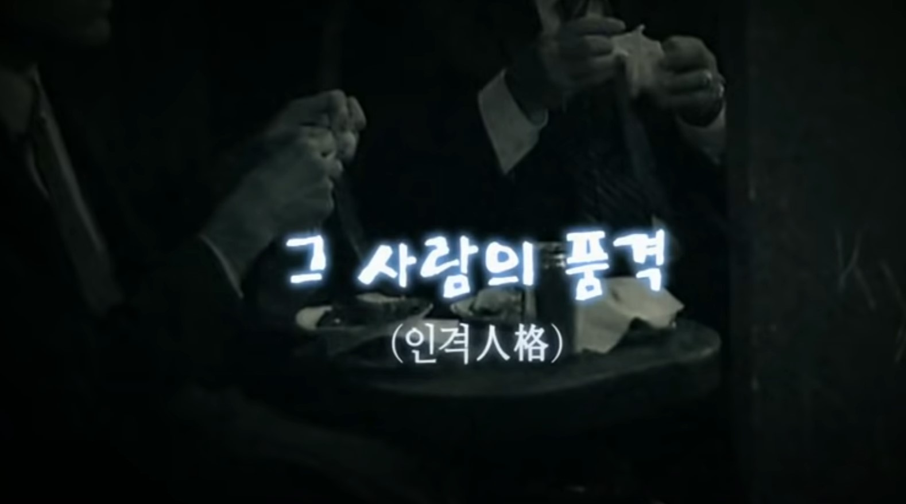 | 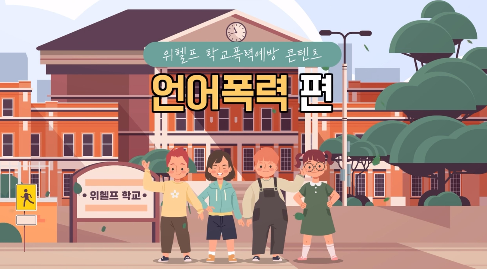 | 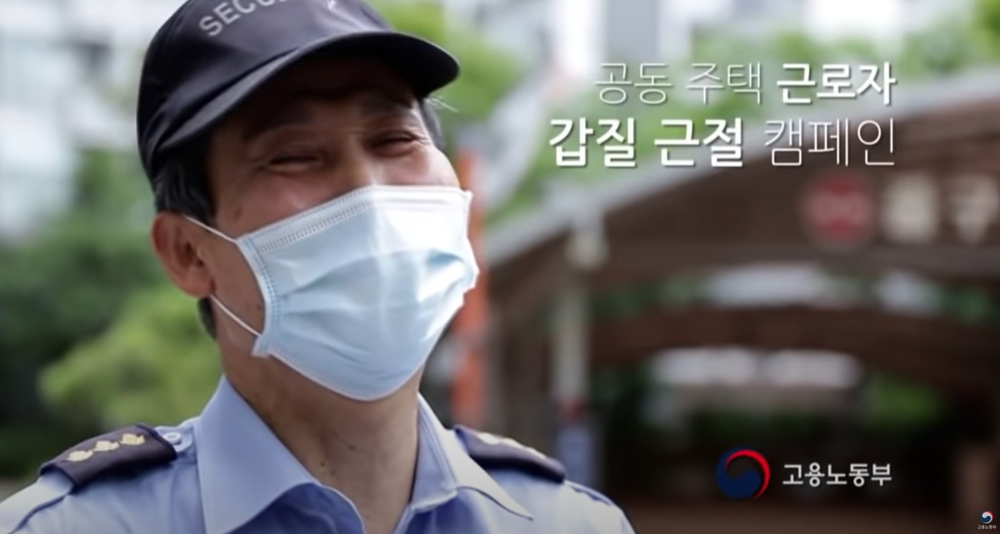 | 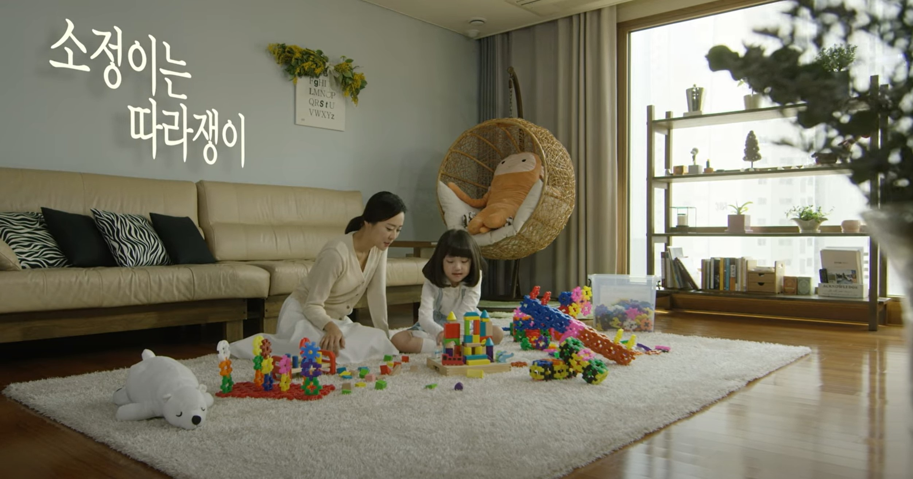 | 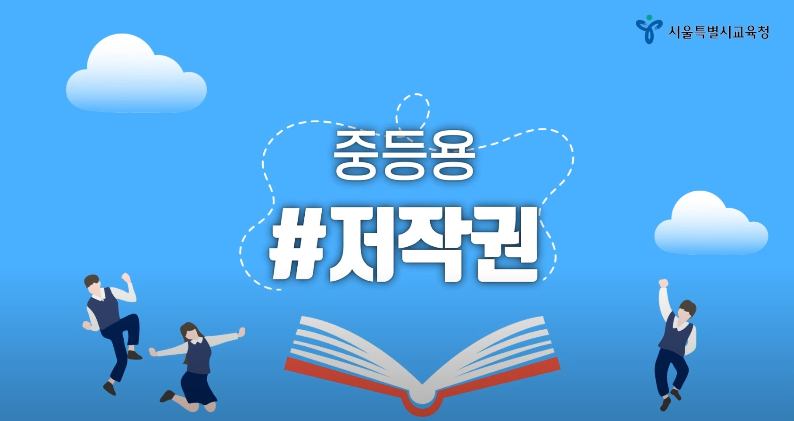 | 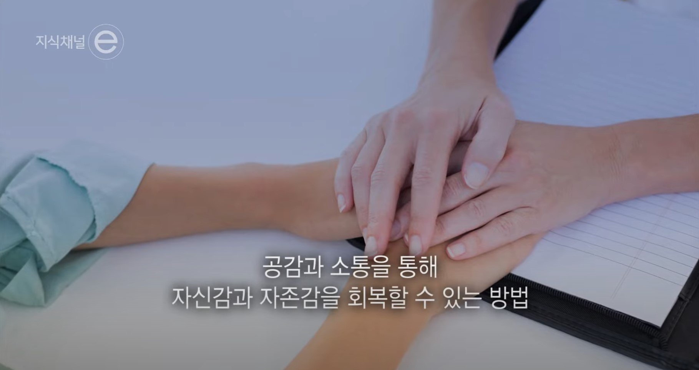 | 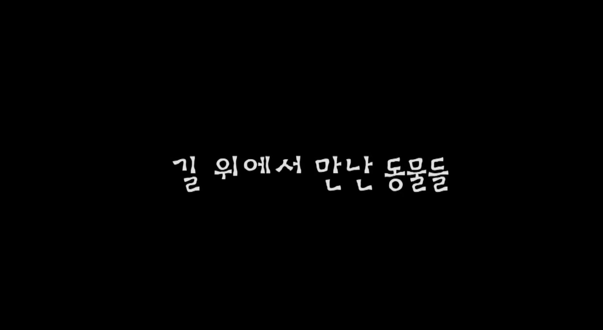 | 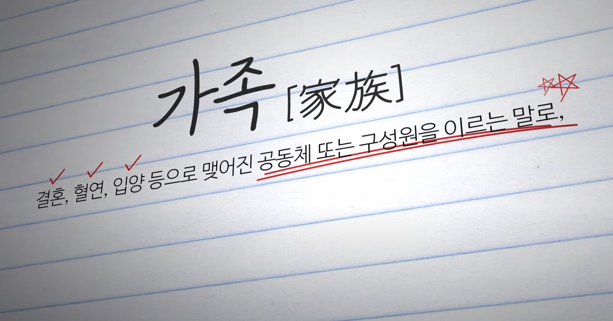 | 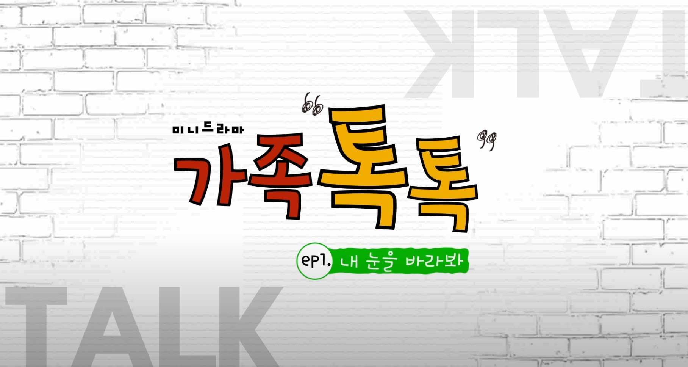 |  |
 |
|||||
더불어 살아가는 지혜(3분 33초) 서로 배려하고 함께 나누는 공동체의 삶에 대한 메시지 전달 |
마음으로 소통하는 것의 중요성(3분 19초) 공감하고 배려하는 듣기와 말하기를 통한 소통의 중요성 전달 |
세상을 변화시키는 공감의 힘(1분 50초) 다양한 상황 속에서 나, 우리, 시민사회로 생각을 확장하며 공감능력을 향상 |
내모습 그대로 땡큐(1분 8초) 자신이 세상에 하나뿐인 존재임을 인식하기 |
마음을 움직이는 공감대화(1분 정도) 마임을 통해 경청에 필요한 관심과 몰입 느끼기 |
언어 폭력, 보이지 않는 살인의 도구(10분 11초) 학교에서 발생한 언어폭력 문제에 대한 네거티브 콘텐츠(뉴스) 시청을 통해 경각심 전달 |
가상 공간에서 벌어지는 인격 살인(9분 17초) SNS 등 사이버공간에서 발생한 학교폭력, 집단 따돌림 문제에 대한 네거티브 콘텐츠(뉴스) 시청을 통해 경각심 전달 |
나를 위한 믿음, 자기효능감(6분 29초) 자기 자신에 대한 긍정적인 태도와 믿음 기르기 |
언어폭력의 심각성을 이해하고 상대방을 배려하는 마음 기르기(2분 14초) 온·오프라인 상에서 장난처럼 발생하고 있는 언어폭력의 심각성을 이해하고 배려하는 바른 언어 습관 형성 |
언어폭력의 의미 이해 및 생활 속 실천 방법 익히기(8분 22초) 언어폭력이 이루어지는 유형별 상황을 통해 언어폭력의 위험성 및 바른 언어 사용의 중요성 인식 |
긍정 언어의 의미와 중요성을 이해하고 생활 속 실천하기(5분 32초) 상대방의 마음을 배려하는 긍정 언어 사용을 통해 상대방뿐만 아니라 자신의 품격 높이기 |
장난으로 오해하고 있는 언어폭력의 위험성 인식(6분 33초) 평소 장난으로 하고 있는 말과 행동이 심각한 언어폭력이 될 수 있음을 이해하고 자신의 언어습관 점검하기 |
생활 속 우월적 지위 남용 사례 공익광고 ①(31초) ‘을이 존중받아야 갑도 존중받을 수 있다’는 메시지에 대해 함께 생각해 볼 수 있는 계기 마련, 상호 배려의 중요성 확인 |
생활 속 우월적 지위 남용 사례 공익광고 ②(40초) ‘을이 존중받아야 갑도 존중받을 수 있다’는 메시지에 대해 함께 생각해 볼 수 있는 계기 마련, 상호 배려의 중요성 확인 |
생활 속 우월적 지위 남용 사례 공익광고 ③(50초) ‘을이 존중받아야 갑도 존중받을 수 있다’는 메시지에 대해 함께 생각해 볼 수 있는 계기 마련, 상호 배려의 중요성 확인 |
개인정보의 개념과 중요성: 1. 개인정보? 그게 뭐예요?(3분 59초) 최근 개인정보가 유출되는 사건이 많으므로 관련 개념과 중요성을 사례를 통해 확인 |
개인정보의 개념과 중요성: 2. 개인정보가 위험해요!(5분 12초) 최근 개인정보가 유출되는 사건이 많으므로 관련 개념과 중요성을 사례를 통해 확인 |
개인정보의 개념과 중요성: 3. 개인정보를 구해줘요!(5분 36초) 최근 개인정보가 유출되는 사건이 많으므로 관련 개념과 중요성을 사례를 통해 확인 |
알기 쉬운 지식재산권과 저작권(6분 48초) 저작권에 대한 인식 개선과 실천의지 제고 |
자살에 대한 인식, 대처, 자살 예방과 관련된 프로그램 소개(4분 57초) 학교폭력, 자존감 등의 문제로 어려움을 겪는 학생들에게 대처할 수 있는 방안을 제시함으로써 자살 예방 및 생명존중에 대한 인식 제고 |
길 위에서 만난 동물들의 생명에 대한 이야기를 샌드아트로 소개(4분 24초) 유기견, 동물 사냥 등 동물의 생명에 대한 이야기를 통해 모든 생명의 소중함 인식 제고 |
다양한 형태의 가족을 소개하며 가족에 대한 편견을 인식(2분 10초) 조손 가족, 한부모 가족, 입양가족 등 다양한 가족의 형태를 소개하며 가족에 대한 편견 개선 |
가족간의 대화가 중요함을 알려주는 웹드라마 가족톡톡(5분 27초) 스마트폰만 바라보는 가족들의 이야기를 드라마의 형태로 제시하며 가족간의 눈맞춤과 소통의 소중함의 인식 개선 |
너에게로 닿는 길-친절과 배려의 가치 다른 사람의 입장을 고려하고 배려하는 사람은 손해를 보는 것 같은 기분이 들 때 배려가 지닌 힘에 대한 가치를 고민해보고 실천화 |
안다미로 2. 가족의 진정한 의미는 무엇일까?(103p) 늘 곁에 있어 소중함을 잊기 쉬운 가족에 대해 다시 생각하며 화목한 가정을 만들기 위한 노력 경주 |